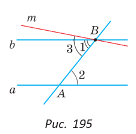
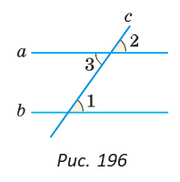
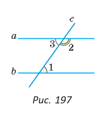
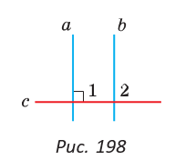
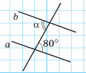
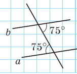

§ 17. Свойства параллельных прямых
Вы знаете, что если две прямые пересечены секущей и накрест лежащие углы равны, то прямые параллельны. Это признак параллельности прямых. Обратное утверждение звучит так: «Если две прямые параллельны и пересечены секущей, то накрест лежащие углы равны». Это утверждение верно, и оно выражает свойство параллельных прямых. Докажем его и два других свойства для соответственных и односторонних углов.
Если две параллельные прямые пересечены секущей, то внутренние накрест лежащие углы равны.
|  |
Дано: a || b, AB — секущая, ∠ 1 и ∠ 2 — внутренние накрест лежащие (рис. 195). Доказать: ∠ 1 = ∠ 2. Доказательство. Предположим, что ∠ 1 ≠ ∠ 2. Отложим от луча BA угол 3, равный углу 2. Так как внутренние накрест лежащие углы 2 и 3 равны, то m || a по признаку параллельности прямых. Получили, что через точку B проходят две прямые b и m, параллельные прямой a. А это невозможно по аксиоме параллельных прямых. Следовательно, наше предположение неверно и ∠ 1 = ∠ 2. Теорема доказана. |
Если две параллельные прямые пересечены секущей, то соответственные углы равны.
|  |
Дано: a || b, c — секущая, ∠ 1 и ∠ 2 — соответственные (рис. 196). Доказать: ∠ 1 = ∠ 2. Доказательство. Углы 1 и 3 равны как накрест лежащие при параллельных прямых a и b. Углы 2 и 3 равны как вертикальные. Следовательно, ∠ 1 = ∠ 2. Теорема доказана. |
Если две параллельные прямые пересечены секущей, то сумма внутренних односторонних углов равна 180°.
|  | Дано: a || b, c — секущая, ∠ 1 и ∠ 2 — внутренние односторонние (рис. 197). Доказать: ∠ 1 + ∠ 2 = 180°. Доказательство. Углы 2 и 3 — смежные. По свойству смежных углов ∠ 2 + ∠ 3 = 180°. По свойству параллельных прямых ∠ 1 = ∠ 3 как накрест лежащие. Следовательно, ∠ 1 + ∠ 2 = 180°. Теорема доказана. |
Сформулируйте и докажите самостоятельно аналогичные свойства для внешних накрест лежащих и внешних односторонних углов.
Следствие
Прямая, перпендикулярная одной из двух параллельных прямых, перпендикулярна и другой прямой.
|  |
Докажите это следствие самостоятельно. На рисунке 198 a || b и c ⊥ a, т. е. ∠ 1 = 90°. Согласно следствию c ⊥ b, т. е. ∠ 2 = 90°. |
Доказанные нами теоремы о свойствах углов при двух параллельных прямых и секущей являются обратными признакам параллельности прямых. Чтобы не путать признаки и свойства параллельных прямых, нужно помнить следующее:
а) если ссылаются на признак параллельности прямых, то требуется доказать параллельность некоторых прямых;
б) если ссылаются на свойство параллельных прямых, то параллельные прямые даны, и нужно воспользоваться каким-то их свойством.
А теперь выполните Тест 1 и Тест 2.
| Тест 1 | |
|---|---|
|  | На контрольной работе Саша решал задачу: «Дано, что a || b. Найдите угол α». Он записал: «Угол α равен 80° по признаку параллельности прямых». Прав ли Саша? Если нет, то на какую теорему нужно сослаться? |
| Тест 2 | |
|---|---|
|  | Маша решала задачу: «По углам на рисунке выясните, как расположены прямые a и b». Она записала: «a || b по свойству параллельных прямых». Права ли Маша? Если нет, то на какую теорему нужно сослаться? |
|
|